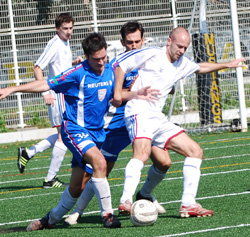

|
YC&AC, Sunday 21st October,
'Al, you're a cheating w....r!' Playskool kids turning their innocent faces up to parents in aniticipation of a translation were to be disappointed for much of what was otherwise a beautiful day -- blue skies, fluffy clouds, birds singing etc.
This was not for the faint-hearted. BFC's founding father Gordon Liversidge deserves a big, shiny medal for reffing this one. Doubts linger over whether we will be invited back to the international school, however. The headmaster apparently left in disgust after five minutes.
Vagabonds felt the scoreline flattered BFC, and may have had a point, but in truth BFC's four-goal second half was arguably their best 40 minutes of the season. Fifteen points from five games looks nice on paper, but BFC have yet to hit full stride.
It took until the 30th minute for the BFC firsts to break through, Carlos Aranda making space and firing in a stinging drive from 25 metres which ruined Taylor Mignon's birthday utterly, squirming under the Vags goalkeeper and bobbling agonisingly across the line.
That was pretty much it for the first half, apart from a couple of half-chances for Vags striker Alex Sahara, who was kept very quiet by Brian Doyle and James Mulligan. That and some lively 'debate' between one or two players that lasted until about 10 p.m.
Among the more salient observations to emerge from the game's post-mortems:
'You should be imprisoned for about 27 years!' (Ged nurses an imaginary bump on his cheek)
'You're not a dirty player -- I know you got there as quick as you could!' (Al assures Ged there are no hard feelings)
'Go on, arm-wrestle! That'll settle it!' (the Solomon-like wisdom of Day)
'Arm-wrestles always kick off -- this'll be BRILLIANT!' (more Day)
'No, I'll ask him a maths question and THAT will prove he elbowed me in the face!' (Ged ups the ante before quoting Socrates, or some other old git)
The handbags continued in the second half, by which point BFC had taken control. A quarter of an hour after the restart and it was 2-0. Dan Clarke drifted inside and played in Alastair Himmer, whose low drive into the danger area was unluckily diverted past Mignon by Ged O'Connell. Boeuf a la mode!
FILLET OF FISH

Shosuke Yamagishi, who had been quiet all game, added a third, latching on to a clever ball from Leigh Manson to smash the ball past Mignon, who by now was having a truly shite birthday.
At the other end, Simon Sparkes and Gary Quinn tried to drag Vags back into the game but little was getting past Doyle and Mulligan, who had analysed the videotapes and opted for a little less Julian Dicks and more Franco Baresi this week. It worked a treat.
The Sparkler did get one away but BFC goalkeeper Jason Leonardis whipped off his headphones to get his GPS-installed dustbin lid gloves in the way.
There was still time for Day to make his mark, beating Mignon with an off-balance shot he had no right to pull off for 4-0. His second was even better as he picked his spot and drove the ball in off the post as the floodgates briefly threatened to open.
With two or three regular players away but due back soon, and the odd glitch yet to be ironed out, BFC can still improve, although sterner tests await in the Swiss, Sala and YCAC.
Day almost completed his hat-trick, Mignon doing well to avert the danger, while Yamagishi really should have been awarded a penalty after taking an elbow in the face. Aaah and on that subject, Gedster, you should have that cheekbone looked at, mate. It looked REALLY nasty at the izakaya! Handbags! It's what the TML is all about.
Report by PUMA BLACK
|